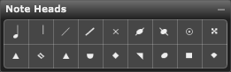

Palette Overview

The following describes each of the tools in the Note Heads palette:
- Standard Head. This is a standard note head. Use this tool if you want to convert a shaped head back into a standard head.
- Invisible Head. Use this tool to make note heads invisible. The stem and flags remain; only the note head disappears.
- Rhythmic Slash Head. Use this head to notate guitar or other strummed instrument parts. Generally, this head is used to indicate strumming with a specific rhythm. This head usually has a stem, but no pitch indication.
- Percussion Head. Use this head to notate percussion parts.
- Open & Closed Rhythm Heads. Use these heads to notate rhythm parts. Open rhythm heads represent whole notes and half notes; closed rhythm heads represent quarter notes and smaller.
- Open & Closed Slash Heads. Use these heads to notate guitar or other strummed instrument parts. Generally, these heads are placed without stems or pitch, in the center of a staff. The open slash head represents whole notes and half notes; the closed slash head represents quarter notes and smaller.
Using the Note heads Palette
To change the shape of a note head:
- Select a note head tool from the Note heads palette.
- Position the cursor over the note whose head you wish to change.
The cursor becomes a crosshair when you move it over the Score View.
- Click the desired note.
Overture automatically changes the note head.
There are actually two fa heads although only one appears in the Note heads palette. Notation uses different fa heads depending on whether the stem points up or down. Overture automatically uses the correct fa head depending on stem direction.
To change the shape of multiple notes:
- Select the notes you want to modify.
- Ctrl[Cmd]-click on the desired tool.
All selected notes change immediately to reflect the tool used.